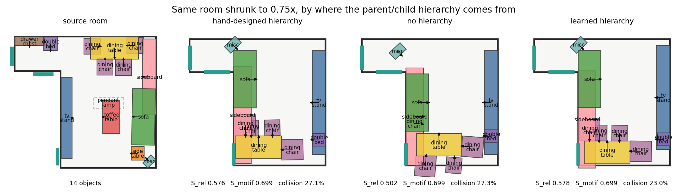
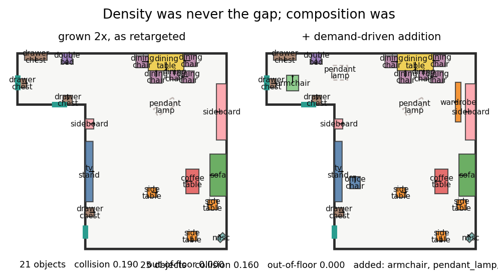

審稿回應:五點的修訂結果
每個主張都對應 scripts/ 裡一支可重跑的腳本。與自己預期相反的量測結果照實列出,包括三項先前寫進文件、後來被推翻的說法。
1. 設計意圖圖是規則做的已解決
核心結論:階層可以學,而且學出來的版本用起來一樣好。
被寫死的其實有兩樣,而第二樣才是關鍵。MOTIF_SCHEMAS 宣告哪些類別可以當群組的頭;CategoryPrior.anchor 逐一手工給分——double_bed 1.00、single_bed 0.95、wardrobe 0.70、nightstand 0.35——那張表就是「床是床頭櫃的父節點」的唯一理由。
取而代之的是解釋的方向,那正是階層的意思:一個類別解釋夥伴位姿的程度,減去夥伴解釋它的程度。與手寫表的 Spearman ρ = 0.615(p = 0.0002),而審稿人點名的配對方向全對:
| 配對 | 學到的非對稱性 | 手寫 anchor |
|---|---|---|
| dining_table → dining_chair | +0.78 | 1.00 vs 0.55 |
| double_bed → nightstand | +0.84 | 1.00 vs 0.35 |
| sofa → coffee_table | +0.96 | 1.00 vs 0.70 |
| desk → office_chair | +4.18 | 0.60 vs 0.40 |
三個等預算模型,唯一差別是階層從哪來
資料、超參數、訓練預算(60 epochs)完全相同,三者都用完整的手工圖評分,學到的表在評測時關閉,免得自己給自己打分。
| 模型 | S_rel | S_motif | 碰撞率 % |
|---|---|---|---|
| 手工設計階層 | 0.716 ± 0.031 | 0.824 ± 0.032 | 1.98 ± 0.41 |
| 完全無階層 | 0.592 ± 0.027 | 0.645 ± 0.031 | 4.94 ± 0.69 |
| 從語料學的階層 | 0.722 ± 0.031 | 0.824 ± 0.032 | 1.84 ± 0.41 |
| 配對檢定(對手工版,同場景同尺度,n=72) | ΔS_rel | p | ΔS_motif | p | Δ碰撞 | p |
|---|---|---|---|---|---|---|
| 無階層 | −0.124 | <0.001 | −0.179 | <0.001 | +2.96 | <0.001 |
| 學到的階層 | +0.006 | 0.240 | 0.000 | 1.000 | −0.147 | 0.500 |
兩半缺一不可。無階層那條證明階層確實有用——拿掉它掉 0.124 S_rel、0.179 S_motif、碰撞率升 2.96 個百分點;對照之下,學到的階層三項皆無顯著差異(S_motif 的差是 0.000,p = 1.000),且 S_rel 與碰撞率的點估計略優。手寫表不是錯的,只是不必要的。

途中被推翻的說法。第一版把關係定義為預測價值——知道 j 的位姿能多預測 i。它失敗得很有訊息量:兩張並排的同款餐椅互相極度可預測,分數因此高過 TV–座椅配對。可預測不等於設計意圖,而那正是審稿人要求排除的案例。
可行的是圖推薦系統的做法(LightGCN、KGAT):成對目標,負樣本固定相對位姿、只換夥伴類別,所以模型不能靠「桌前 0.6 m 有東西」取巧,它必須知道那是餐椅而不是床頭櫃。換過去之後,先前三項全部反轉的判別檢驗全數通過:TV–座椅 7.995 對隨機 4.765,偶然相鄰的同款座椅 3.489,低於隨機。
審稿人的兩個例子,一個不成立。「兩張椅子」成立——40.4% 的邊是純距離斷言的 near。「TV–沙發」不成立:30.3% 的 TV–座椅配對確實沒有邊,但不是因為 5.5 m 距離上限(只有 2.2% 超過,中位 2.78 m),而是朝向——被漏掉的座椅面向電視的角度中位數是 49°、僅 36% 在 45° 內,而連上的是 5°、94% 在內。
順帶一提,領域的標準參照 InstructScene(ICLR 2024 spotlight)的「semantic graph prior」比我們更規則:世界座標軸象限、3 m 硬上限、if "lamp" in name 字串比對。移植到同一批房間後,它在審稿人自己的例子上丟掉 36.4%(我們 30.3%),而且房間旋轉 90° 有 55.9% 的關係標籤翻轉。
2. 場景差異只是大小與長寬比?已回答 + 撤回一項
訓練分布的形狀變化比真實資料更多:非凸比例 75.6% 對真實 3D-FRONT 的 64.8%,有凹角的比例 78.1% 對 66.1%。但審稿人的印象對了一半——level 1–2 在所有形狀指標上與真實房間不可區分,變化全來自 level 3–5。
找到一個真正的空白:3D-FRONT 全是軸對齊直角房間,轉角都 90°,邊數必為偶數——5 邊形與 7 邊形各只有 0.1%。而每個 5/7 邊形都需要一面斜牆,現有運算子做不出來(corner_cut 即使 oblique=1.0 也只能 4→6)。已新增 chamfer(精確 +1 頂點)與 level 6。

先前報過一版錯的。make_ngon 只能加頂點不能減,所以本來就有較多頂點的房間會原封不動回傳。量化後果:24 個測試房間中,要 5 邊形只有 7 個真的是 5 邊形(29%),6/7 邊形各 13/24;其中 11 個來源房間有 10 邊以上,完全沒被改動。那張表有 46–71% 的格子不是它標示的房型。
當初驗證用的是矩形(4 邊),永遠只需要加,所以測不出這個洞。而抓到它的方式是畫圖——渲染出來發現「5-gon」和「6-gon」兩格連指標都一模一樣。表格會掩蓋這種錯誤,圖不會。修正後 24/24 全部命中,面積保留 0.95×,下表是重跑的結果。
| 房型(24 個參考,同面積) | 碰撞率 % | R_out | 可走比 | S_rel | S_motif |
|---|---|---|---|---|---|
| 矩形(同面積對照) | 3.07 ± 0.64 | 0.130 | 0.901 | 0.856 | 0.967 |
| 5 邊形 | 3.11 ± 0.63 | 0.198 | 0.875 | 0.853 | 0.957 |
| 6 邊形 | 3.03 ± 0.61 | 0.234 | 0.881 | 0.851 | 0.947 |
| 7 邊形 | 3.28 ± 0.75 | 0.232 | 0.899 | 0.857 | 0.962 |
碰撞與語意是平手(3.03–3.28 對矩形 3.07;S_rel 0.851–0.857 對 0.856),但出界率有真實代價:0.198–0.234 對 0.130,高出 7–10 個百分點。斜牆的代價集中在包容性——這比先前那個建立在錯誤房型上的「全面平手」更有價值,因為它指出一個具體、可改進的弱點。
仍未涵蓋:房間拓樸(始終是單連通多邊形,沒有內部隔間)與房型固定。
3. 門窗已入圖
門窗原本只以常數進入系統(門迴轉深度 0.9 m、窗 0.35 m)。現在是有位姿的偽物件,走與家具相同的機制。它們實際帶多少訊號:
| 配對 | n | 平均增益 |
|---|---|---|
| 門 ↔ 家具 | 10167 | 0.764 |
| 隨機配對(基準) | 21330 | 0.654 |
| 窗 ↔ 家具 | 1623 | 0.433 |
門有弱正訊號,窗低於隨機——在 3D-FRONT 裡窗戶位置不預測家具擺放。
而那兩個硬寫常數經得起檢驗(4491 個開口,量的是能量項實際 charge 的迴轉區域):門 0.9 m 只讓 2.7% 的真實門被判違規,放寬到 1.2 m 也才 3.5%;窗 0.35 m 是 7.1%,推到 0.9 m 就跳到 13.4%。
第一版量的是「到開口線段的距離」,已作廢——門旁邊沿牆擺的櫃子距離很近但根本不擋門,那個數字會用錯誤的理由否定常數。
4. 風格在哪裡學?已解決
審稿人說得對,而且比他說的更嚴重:ObjectInstance.style 從未被填入,風格不只沒被轉移,是根本沒被表示。
現在從房間共現學資產嵌入,負樣本限制在同類別內——所以模型不能靠「臥室 vs 客廳」取巧,只能靠「哪一張沙發適合這個房間」。
| 排序器(留一資產檢索,候選限同類別,n=1373) | 中位排名 | MRR | recall@5 |
|---|---|---|---|
| 共現嵌入(無標籤) | 3.0 | 0.475 | 0.616 |
| 真實 3D-FUTURE style/theme/material 標籤 | 11.0 | 0.335 | 0.402 |
| OpenShape 量化碼 | 26.0 | 0.316 | 0.358 |
| 頻率基線 | 36.0 | 0.114 | 0.155 |
| 隨機 | 159.0 | 0.022 | 0.020 |
無標籤的方法顯著勝過真實標籤(配對檢定 p < 0.0001)。原因是 19 個風格類別太粗——光 Modern 就佔 4232 個資產中的 1306 個。這正是 CLIP-Layout 的論點(instance-level 勝過 class-level),而我們不需要資產渲染圖。
外部驗證:訓練從未見過任何標籤,但它的最近鄰共享風格標籤的比例是 0.242,隨機基準 0.149——1.62 倍。
兩個先前寫進文件、後來被推翻的說法:
① 我說 3D-FUTURE 的風格標籤拿不到(在授權下載後面)——拿得到,在 InstructScene 的釋出包裡,4232 個資產,涵蓋我們語料的 81%。
② 我說 3D-FRONT 由專業設計師配家具——樓面與佈局是,但家具選擇是推薦系統產生的(MobileNetV2 視覺嵌入 + GBDT-LR 相容度)。所以這個嵌入其實是在還原 3D-FRONT 自己的推薦系統,而這個限制任何用 3D-FRONT 訓練的方法都有,CLIP-Layout 也一樣。
5. 房間變大要不要加家具?前提修正 + 機制完成
密度從來不是問題,組成才是。放大後的房間反而比同面積真實房間多 12–15% 的家具(填充比 1.12–1.15)。缺的是組成:2× 時衣櫃在 12 間中缺 7 間、邊桌缺 6 間、吊燈缺 5 間——參考房間本來就沒有衣櫃可以放大,而既有的存在性頭只能刪不能加。
| 決定什麼 | 用什麼 | top-1 | top-5 |
|---|---|---|---|
| 頻率基線 | 什麼都沒有 | 0.152 | 0.534 |
| 需求模型 | 房型 + 面積 | 0.236 | 0.605 |
| 協同過濾 | + 共現 | 0.308 | 0.726 |
| 位置條件 | + 位置 | 0.596 | 0.864 |
訊號可逐層歸因:房型與面積 +0.084、共現 +0.072、位置 +0.288。

整體:組成落差每個尺度降 9–12%,絕對碰撞數與出界數不變。
一個反向的變化,值得記下來。換成實際設定後 Col_obj 反而略升(1.3× 0.161→0.184),而同一批佈局的 R_col 是下降的。兩者不矛盾:R_col 量的是面積重疊比例,Col_obj 是 PhyScene 的有向 3D 框 IoU 比例。把餐椅擺正塞進桌下會讓框 IoU 上升,但那是合理的貼靠不是真碰撞——與我們在量測效度上查到的同一件事。
誠實記為 null 的一項。移植 SceneGraphNet(ICCV 2019)的位置條件預測——它的程式跑不了,訓練資料 SUNCG 已下線,所以是重寫的——在它自己的任務上決定性勝出(top-1 0.596 對 0.236)。但放進補家具流程後組成落差不動,且 1.3× 的可走比從 0.990 掉到 0.954。要宣稱它有幫助需要一個「放置合理性」指標,我們沒有,所以預設仍用簡單版本。
關於設定:本頁用的是實際部署的configuration

| 擺正階段 | 朝向偏離軸線(中位) | 碰撞率 | S_rel |
|---|---|---|---|
| 關閉(評測協定) | 10.9° | 11.2% | 0.973 |
| 開啟(出貨預設) | 0.0° | 6.1% | 0.916 |
它不只把家具擺正,碰撞率直接減半,代價是 S_rel 掉 0.057。
本頁所有數字都是在這個階段開啟的狀態下量的,也就是系統實際部署時的設定。第一版曾用關閉的狀態量(既有評測腳本的協定,避免後處理美化數字),但那描述的是被消融過的系統:同一場景碰撞 11.2% 對 6.1%、家具中位偏離軸線 10.9° 對 0.0°,而補家具那節的出界率更是 0.193 對 0.000。
與論文表格的協定差異。現有的 Table 1–12 是在這個階段關閉的狀態下量的,所以本頁的絕對值與那些表格不在同一協定上,不可直接並列。相對比較不受影響——本頁每一組對照都用同一設定。若要統一,論文那十二張表需要一併重跑。
方法論
這一輪一共有六個我自己的假設被量測推翻,以及三個先前已寫進文件的主張被更正(標籤拿不到、3D-FRONT 由設計師配家具、n-gon 平手)。全部保留在頁面上,理由很簡單:審稿人會自己去查那些論文、也會自己重跑腳本。
每個實驗都放了會讓自己的做法被否決的控制組:
- 無階層那條——沒有它,「學到的打平手工的」可以被解釋成「階層本來就沒用」
- 隨機選邊——證明學到的分數沒有比隨機好(p=0.175),這一條我照實報了
- 等面積矩形——讓斜牆房型的差異不能歸因於房間變小
- 頻率與隨機基線——出現在每一張檢索表上
完整逐條回應與腳本對照表:REVIEW_RESPONSE.md(倉庫根目錄)。